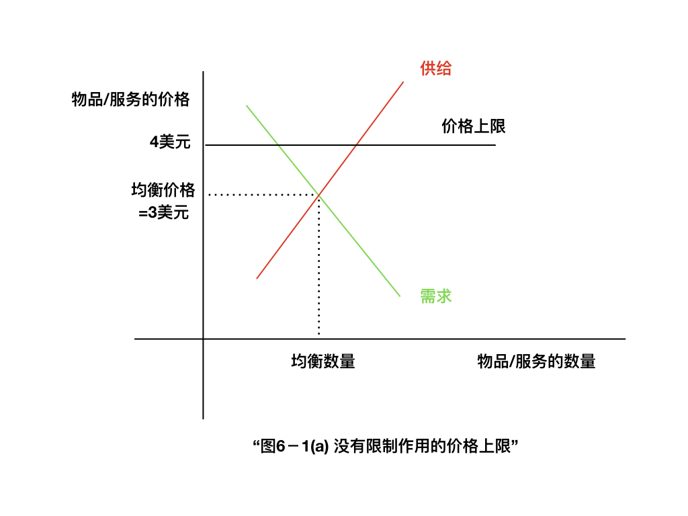
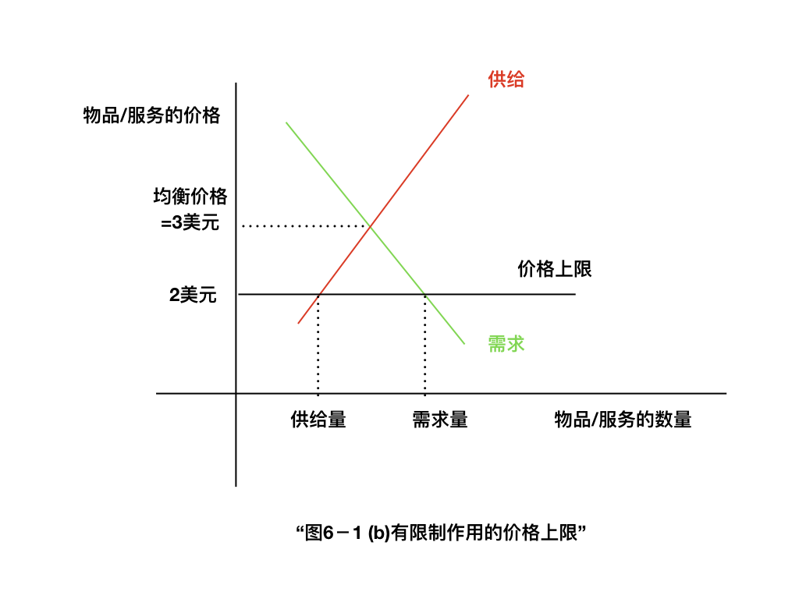

字符替换练习
这是一个python正则表达式的练习:
我恰好读到曼昆经济学原理中的一小段, 觉得用来练习正则表达式中的文本替换命令很有意思.
In [1]:
content0='''
价格上限如何影响市场结果
...对冰激凌市场实行价格上限时，可能有两种结果。
'''

In [2]:
content1='''
在图6－l（a）幅中，政府实行每个冰激凌蛋卷为4美元的价格上限。
在这种情况下，由于使供求平衡的价格（3美元）低于上限，
价格上限没有限制作用。
市场力量自然而然地使经济向均衡变动，而且，价格上限没有影响。
'''

In [3]:
content2='''
图6－l0(b)幅表示另一种结果，这种结果更令人感兴趣，也更可能。
在这种情况下，政府实行每个冰激凌蛋卷2美元的价格上限。
由于均衡价格3美元在价格上限之上，所以，价格上限对市场有一种限制性约束。
供求力量趋向于使价格向均衡变动，但当市场价格达到上限时，就不能再上升了。
因此，市场价格等于价格上限。
在这种价格时，冰激凌的需求量（图中的125个）超过了供给量（75个）。
存在冰激凌短缺，因此，一些在现行价格时想买冰激凌的人买不到。
'''
In [4]:
content3='''
当冰激凌短缺的形成是由于这种价格上限时，
一些配给冰激凌的机制自然就会出现。
这种机制可能是排长队：
那些愿意提前来到并排队等候的人得到一个冰激凌，
而另一些不愿意等候的人得不到。
另一种方法是，
卖者可以根据他们自己的偏好来配给冰激凌，
只卖给朋友、亲戚或同一种族或民族的成员。
要注意的是，
尽管价格上限是由帮助冰激凌买者的愿望而促成的，
但并不是所有买者都能从这种政策中受益。
一些买者尽管不得不排队等候，但以较低的价格得到冰激凌，
而另一些买者根本得不到任何冰激凌。
冰激凌市场的这个例子说明了一个一般规律：
当政府对竞争市场实行限制性价格上限时，就产生了物品的短缺，
而且，卖者必然在大量潜在买者中配给稀缺物品。
这种价格上限之下产生的配给机制很少是合意的。
排长队是无效率的，因为这样做浪费了买者的时间。
根据卖者偏好的歧视
既无效率（因为物品并没有给予对它评价最高的买者）
又可能是不公正的。
与此相比，一个自由竞争市场中的配给机制既有效率又客观。
当冰激凌市场达到均衡时，
任何一个想支付市场价格的人都可以得到一个冰激凌蛋卷。
自由市场用价格来配给物品。
摘录来自: [美]N·格里高利·曼昆. “经济学原理”
'''
文本替换¶
2017-18年的秋冬, 有一场很厉害的流感, 导致各个医院儿科爆满. 一时间各种分析很多. 让我们看看曼昆怎么说的.
看曼昆对此事的看法, 不妨简单使用文本替换, 将例子中的名词替换成实际生活中的名词
In [5]:
import re
content=content0+content1+content2+content3
new_content=(content.replace('冰激凌蛋卷', "儿科医生")
.replace("冰激凌市场", "儿科医疗市场")
.replace("冰激凌", "儿科医生")
.replace("物品", "医疗服务")
.replace('买者', "患儿家长")
.replace('卖者', '儿科医院或医生'))
print(new_content)
读起来好像还很通顺的. 我隐约记得高中政治经济学里面还是讲过基本的供求曲线的.
In [ ]: